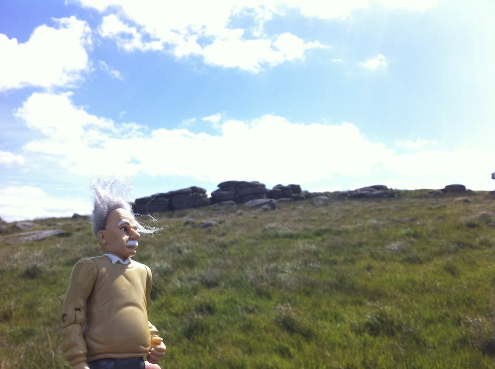

Dartmoor National Park · Devon
All the Tors — Dartmoor in a Year
Every named tor on Dartmoor, walked in a single calendar year — raising money for Leukaemia & Lymphoma Research, now Blood Cancer United. The rule: if Einstein doesn't reach the tor, it doesn't count.

I'd fantasised about doing something like this for a while. The trigger to finally get over my inactivity was frustration at my inability to do anything about a friend's misfortune. So I decided to do something — walk every tor on Dartmoor, in one year, and raise money for Leukaemia & Lymphoma Research (now Blood Cancer United) in the process.
Dartmoor has 268 named tors — granite outcrops rising above the moorland, scattered over a wide and often unforgiving landscape. Some are famous and well-trodden. Many are tucked into remote valleys, hidden in forest, or surrounded by the kind of bog that makes you reconsider all your choices.
I set one rule that made it real: Einstein — a physics action figure I'd been given years ago, one that had already accompanied friends and me on various ridiculous adventures — had to reach every single tor. If he didn't get there, it didn't count.
Walking the moor in all weathers, often before or after a full day of teaching, often in the dark, occasionally in snow, occasionally waist-deep in bog — Einstein made it to all 268. He handled it with characteristic equanimity. As a physics teacher, I found his company appropriate.

